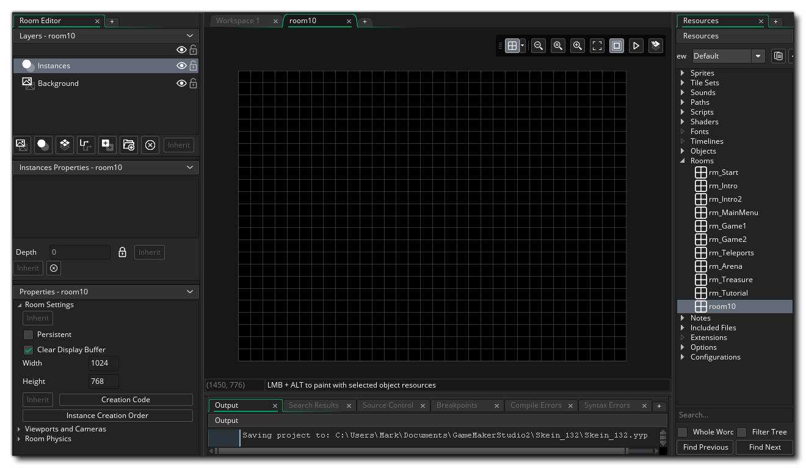

Tous les jeux que vous créez dans GameMaker Studio 2 besoin d'au moins une pièce (mais ils peuvent en avoir beaucoup, beaucoup plus), et une pièce est juste un espace où vous placez des instances des objets qui composent votre jeu ainsi que des tuiles et toutes les autres ressources graphiques. Lorsque vous créez une pièce pour la première fois dans votre arborescence de ressources, une nouvelle fenêtre s'affiche pour éditer ses propriétés, par exemple: 
Par défaut, les outils de la salle seront placés sur la gauche, avec trois sections principales:
- Editeur de calque: Tout dans une pièce est placé sur des calques, et il y a différents types de calques que vous pouvez choisir (plus sur cela plus tard). Les calques sont classés par profondeur et cette profondeur est ce qui définit l'ordre dans lequel le contenu de la couche sera rendu à l'écran lorsque le jeu se déroule. L'ordre de profondeur est du plus haut au plus bas, de sorte que plus la profondeur est basse plus la "caméra" est proche et plus la profondeur est grande plus on s'éloigne. Par exemple, un calque d'une profondeur de -300 sera rendu sur une couche d'une profondeur de -100, et un calque d'une profondeur de 1000 sera rendu sous tout ce qui a une profondeur inférieure à celle-ci.
- Propriétés de la couche: Chaque couche que vous ajoutez à la pièce aura ses propres propriétés, et ces propriétés changeront en fonction du type de couche. Cette fenêtre vous permet de modifier ces propriétés et d'éditer le rendu de la couche.
- Propriétés de la chambre: Les chambres ont aussi un certain nombre de propriétés, qui peuvent être définies ici. Des choses comme la taille de la pièce, les ports d'affichage de la caméra qui sont actifs et quelques autres choses peuvent être réglées ici.
Nous avons mentionné qu'il existe différents types de calques, alors revenons sur ce qu'ils sont et comment ils peuvent être utilisés lors de la construction de vos jeux:
 | Couche d'arrière-plan | La couche d'arrière-plan est une couche qui peut être remplie avec une seule couleur ou une seule image. Il peut être déplacé et positionné dans la pièce, et vous pouvez avoir plusieurs couches de fond. Généralement, il est utilisé, comme son nom l'indique, pour générer un fond constant pour les autres couches de la pièce. Par défaut, une nouvelle pièce contiendra toujours un calque d'arrière-plan, mais vous pouvez le supprimer si vous n'en avez pas besoin. |
 | Couche d'instance | La couche d'instance est l'endroit où vous placez toutes les instances des objets dont vous avez besoin pour le jeu. Pour ajouter une instance à un calque, cliquez simplement |
 | Couche de Tilemap | Après avoir créé un ensemble de tuiles, vous devez ajouter les mosaïques à votre pièce, ce qui est fait en créant une couche de tilemap. Une couche de tilemap est une couche qui vous permet d'ajouter des mosaïques à partir des ressources de l'ensemble de mosaïques que vous avez créées et qui sera configurée automatiquement pour utiliser une grille de la taille des cellules de mosaïque. Vous ne pouvez ajouter qu'une seule case à chaque cellule de la grille, donc si vous avez besoin de plusieurs tuiles pour occuper le même espace, alors vous devriez utiliser plusieurs couches de tilemap. |
 | Couche de chemin | La couche de chemin d'accès est la seule qui ne soit pas réellement rendue lorsque vous exécutez votre partie. Cette couche est plus une couche de «commodité» pour vous aider à créer ou modifier des ressources de chemin, car elle vous permet d'ajouter ou de modifier des chemins dans l'espace de pièce réel. |
 | Couche d'actifs | Parfois, vous voulez un effet graphique sympa, mais vous ne voulez pas le surcroît d'utilisation d'une instance ou n'en avez pas besoin pour faire autre chose que dessiner lui-même. Vous pouvez utiliser un tilemap, mais étant donné que les tilemaps sont limités à l'utilisation d'une grille et d'une seule image par cellule, ils peuvent être un peu restrictifs. C'est à ce moment que vous utiliserez la couche d'actifs. La couche d'actif prend simplement une ressource d'image-objet et la dessine à l'aide des paramètres que vous définissez lorsque vous l'ajoutez dans la pièce. Les sprites peuvent être ajoutés à cette couche de la même manière que les instances d'objets sont ajoutées à la couche d'instance, c'est à dire: vous cliquez |